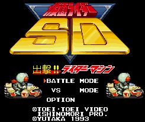

Kamen Rider - SNES Games

Controls
- A button: Block?
- B button: Attack
- X button: [not used]
- Y button: [not used]
- L button: [not used]
- R button: Deaccelerate
- Start: Raise/Lower Speedometer
- Select: Pause
No information available at this time.
Anime Video Game Resource Center © 1998 by Luis A. Cruz